pls load the tutors from the tutor roster csv in my school folder into thunderbird as an address book called Tutor Panel, one contact each, first+last name and email, and skip any row marked inactive
{
"config": [
{
"type": "execute",
"parameters": {
"command": "python3 -c \"import os,csv;os.makedirs('/home/user/school',exist_ok=True);w=csv.writer(open('/home/user/school/tutor_roster.csv','w',newline=''));w.writerows([['first','last','email','status'],['Marta','Oyelaran','marta.oyelaran@brightpath.example','active'],['Devin','Kaur','devin.kaur@brightpath.example','active'],['Hollis','Trenton','hollis.trenton@brightpath.example','inactive'],['Su-Min','Park','sumin.park@brightpath.example','active'],['Rafael','Guimaraes','rafael.guimaraes@brightpath.example','active'],['Nadia','Osei','nadia.osei@brightpath.example','inactive'],['Callum','Weatherby','callum.weatherby@brightpath.example','active']])\"",
"shell": true
}
},
{
"type": "open",
"parameters": {
"path": "/home/user/school/tutor_roster.csv"
}
}
],
"evaluator": {
"func": "check_include_exclude",
"result": {
"type": "vm_command_line",
"command": [
"python3",
"-c",
"import sys, traceback\ndef _main():\n import glob, os, sqlite3, sys\n want = {\"marta.oyelaran@brightpath.example\": \"Marta Oyelaran\",\n \"devin.kaur@brightpath.example\": \"Devin Kaur\",\n \"sumin.park@brightpath.example\": \"Su-Min Park\",\n \"rafael.guimaraes@brightpath.example\": \"Rafael Guimaraes\",\n \"callum.weatherby@brightpath.example\": \"Callum Weatherby\"}\n bad = {\"hollis.trenton@brightpath.example\", \"nadia.osei@brightpath.example\"}\n found = None\n for db in glob.glob(\"/home/user/.thunderbird/*/abook*.sqlite\"):\n try:\n con = sqlite3.connect(\"file:%s?mode=ro\" % db, uri=True)\n rows = con.execute(\"select card, name, value from properties\").fetchall()\n con.close()\n except Exception as e:\n print(\"%s unreadable: %s\" % (db, e), file=sys.stderr)\n continue\n cards = {}\n for card, name, value in rows:\n cards.setdefault(card, {})[name] = value\n mails = {}\n for card, props in cards.items():\n mail = (props.get(\"PrimaryEmail\") or \"\").strip().lower()\n if not mail:\n continue\n first = (props.get(\"FirstName\") or \"\").strip()\n last = (props.get(\"LastName\") or \"\").strip()\n disp = (props.get(\"DisplayName\") or \"\").strip()\n mails[mail] = (\"%s %s\" % (first, last)).strip() or disp\n if all(m in mails for m in want):\n found = (db, mails)\n break\n if not found:\n print(\"no address book file contains all 5 active tutors\", file=sys.stderr)\n print(\"FAIL\")\n raise SystemExit\n db, mails = found\n problem = None\n for mail, name in want.items():\n got = mails[mail].replace(\"-\", \"-\").strip().lower()\n if got != name.lower():\n problem = \"%s named %r not %r\" % (mail, mails[mail], name)\n for mail in bad:\n if mail in mails:\n problem = \"inactive tutor %s was imported\" % mail\n names = [os.path.basename(p) for p in glob.glob(\"/home/user/.thunderbird/*/abook*.sqlite\")]\n dirname = os.path.dirname(db)\n label_ok = False\n for pref in glob.glob(os.path.join(dirname, \"prefs.js\")):\n txt = open(pref, encoding=\"utf-8\", errors=\"replace\").read()\n if \"Tutor Panel\" in txt:\n label_ok = True\n if not label_ok:\n problem = \"no address book named 'Tutor Panel' in prefs.js\"\n if problem:\n print(problem, file=sys.stderr)\n print(\"FAIL\" if problem else \"PASS\")\n\ntry:\n _main()\nexcept Exception:\n traceback.print_exc(file=sys.stderr)\n print(\"FAIL\")\n"
]
},
"expected": {
"type": "rule",
"rules": {
"include": [
"PASS"
],
"exclude": [
"FAIL"
]
}
}
}
}
step 1 07:09:54
THINKINGI need to understand the task. There's a CSV import dialog open for tutor_roster.csv. But the task asks to load tutors into Thunderbird as an address book called "Tutor Panel". The current dialog is a LibreOffice/Calc text import, which is a detour.
Let me think about what's actually being asked: import contacts into Thunderbird's address book. The data I can see in the preview:
1 First, last, email, status (header)
2 Marta Oyelaran, maria.oyelaran@brightpath.example, active
3 Devin Kaur, devin.kaur@brightpath.example, active
4 Hollis Trenton, hollis.trenton@brightpath.example, inactive
5 Su-Min Park, sumin.park@brightpath.example, active
6 Rafael Guimaraes, rafael.guimaraes@brightpath.example, active
7 Nadia Osei, nadia.osei@brightpath.example, inactive
8 Callum Weatherby, callum.weatherby@brightpath.example, active
But there may be more rows below. I need to see the full CSV. Rather than rely on the Calc preview, I should look at the raw file. Let me first take a screenshot / examine the file. Actually the best approach: use a terminal to read the CSV file to get the complete list, then create the Thunderbird address book via importing an LDIF or by entering contacts manually.
Thunderbird address books: best approach is to create a new address book "Tutor Panel" and import an LDIF file, or add contacts. Thunderbird can import LDIF files into a specific address book. That's the cleanest programmatic approach.
Let me plan:
1. Read the CSV file to get all rows (need terminal).
2. Filter active rows.
3. Create an LDIF file with contacts (FN = first last, EMAIL).
4. In Thunderbird: Address Book -> create "Tutor Panel" address book -> import LDIF.
Actually, Thunderbird's "Import" for address books imports into a NEW address book and lets you name it. So I can import the LDIF and name it "Tutor Panel". That avoids manually adding.
First, I need a terminal. Let me open one. There's no obvious terminal icon. I can use the Files app or find a terminal. Let me check - I can launch xterm via... actually I don't have direct bash, only the computer GUI tool. The system prompt mentions bash tool but I only have the computer function. So I must do everything via GUI.
So I need a terminal application on the desktop. Let me look. The taskbar has various apps. I could open a terminal via the Activities or apps grid (bottom left grid icon). Let me first dismiss this Calc import dialog since I don't want to open it in Calc - I'll Cancel it. Actually, keeping the data visible in Calc is useful but I need the full list. Better to open a terminal to read the file reliably.
Let me start by opening the apps grid to find a terminal, or I can use the Files app to navigate. Actually, simplest: open a terminal emulator. Let me click the apps grid (bottom-left 9-dots).
Let me first take a screenshot to see current state clearly, then decide. The screenshot is already provided. Let me Cancel the Calc dialog to avoid confusion, then open a terminal.
Actually, I'll keep things simple. Let me open the apps grid to find Terminal.
ACTIONI'll approach this by first reading the full CSV file (the preview may not show all rows), then importing the active contacts into Thunderbird. Let me open a terminal to inspect the file. First, let me open the applications grid.
EXECUTED (pyautogui in VM)pyautogui.click(1203, 878)
step 2 07:10:06
THINKINGThe Calc dialog was cancelled. Now I'm at the desktop. I need a terminal to read the full CSV file reliably. Let me open the apps grid (bottom-left 9-dots) to find a Terminal application.
ACTIONI cancelled the spreadsheet import dialog. Now let me open a terminal to read the full CSV file, since the preview may not show all rows. I'll open the applications grid.
EXECUTED (pyautogui in VM)pyautogui.click(32, 1040)
step 3 07:10:16
THINKINGThere's a Terminal app. Let me open it to read the CSV file. I need to find the file first - it's in the "school" folder. Let me open Terminal and locate the file.
ACTIONThere's a Terminal application. Let me open it to read the CSV file.
EXECUTED (pyautogui in VM)pyautogui.typewrite("find ~ -name \"tutor_roster.csv\" 2>/dev/null")
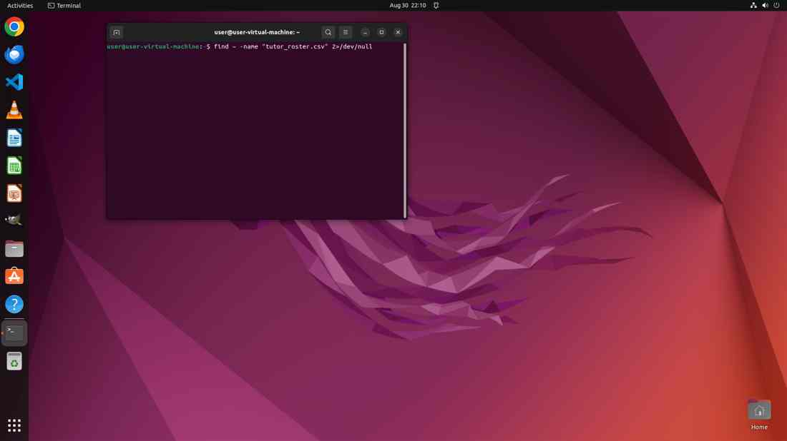
step 6 07:10:47
THINKINGThe command was typed but I need to press Enter. Wait, I included a newline in the type which may have submitted it. Let me press Enter to be safe.
EXECUTED (pyautogui in VM)pyautogui.press("return")
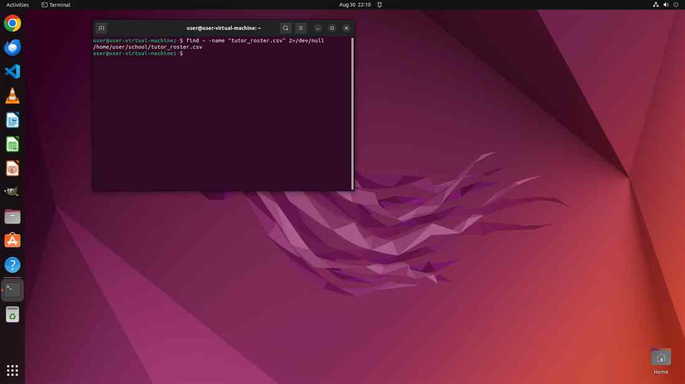
step 7 07:11:02
THINKINGThe file is at /home/user/school/tutor_roster.csv. Let me print its contents with line numbers.
ACTIONFound it at `/home/user/school/tutor_roster.csv`. Let me view its full contents.
TOOL CALL<tool_call>
<function=computer_use>
<parameter=action>
type
</parameter>
<parameter=text>
cat -A /home/user/school/tutor_roster.csv
</parameter>
</function>
</tool_call>
EXECUTED (pyautogui in VM)pyautogui.typewrite("cat -A /home/user/school/tutor_roster.csv")
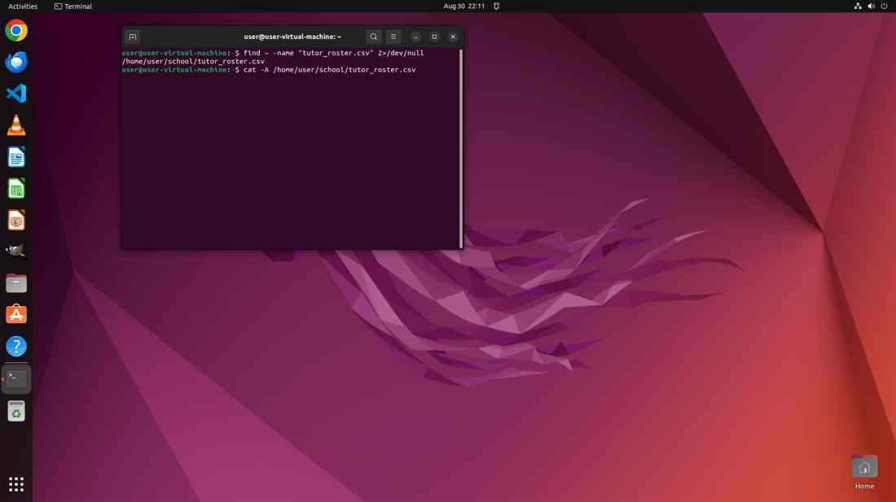
step 8 07:11:19
THINKINGThe command is typed but not yet run (no output). The terminal is small. Let me maximize the terminal first for better visibility, then run. Actually let me just press Enter.
EXECUTED (pyautogui in VM)pyautogui.press("return")
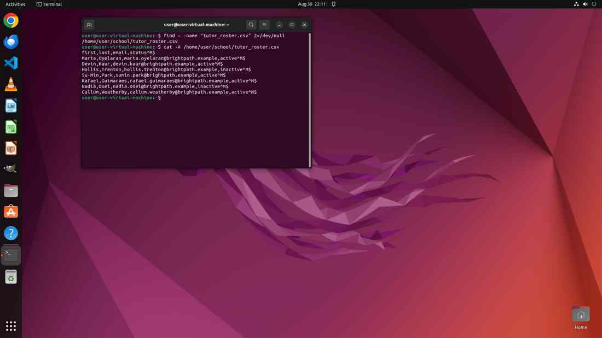
step 9 07:11:55
THINKINGNow I can see the full file. Note the ^M$ means CRLF line endings. The full contents:
- header: first,last,email,status
- Marta,Oyelaran,marta.oyelaran@brightpath.example,active
- Devin,Kaur,devin.kaur@brightpath.example,active
- Hollis,Trenton,hollis.trenton@brightpath.example,inactive
- Su-Min,Park,sumin.park@brightpath.example,active
- Rafael,Guimaraes,rafael.guimaraes@brightpath.example,active
- Nadia,Osei,nadia.osei@brightpath.example,inactive
- Callum,Weatherby,callum.weatherby@brightpath.example,active
Active tutors (5):
1. Marta Oyelaran - marta.oyelaran@brightpath.example
2. Devin Kaur - devin.kaur@brightpath.example
3. Su-Min Park - sumin.park@brightpath.example
4. Rafael Guimaraes - rafael.guimaraes@brightpath.example
5. Callum Weatherby - callum.weatherby@brightpath.example
Skipped (inactive): Hollis Trenton, Nadia Osei.
Now I need to import these into Thunderbird as an address book called "Tutor Panel". The cleanest way is to create an LDIF file and import it via Thunderbird's address book import. Thunderbird import of LDIF creates a new address book that you can name. Let me generate the LDIF via a script.
LDIF format for Thunderbird address book:
```
version: 3.0
dn: marta.oyelaran@brightpath.example
givenName: Marta
sn: Oyelaran
cn: Marta Oyelaran
mail: marta.oyelaran@brightpath.example
END
...
```
Actually Thunderbird's LDIF import expects records. The typical export format from Thunderbird is:
```
BEGIN:vCard? no.
```
Actually Thunderbird imports LDIF (RFC 2849). Each contact entry:
```
version: 3.0
dn: <something unique>
objectClass: person
objectClass: inetOrgPerson
cn: Full Name
sn: Last Name
givenName: First Name
mail: email
```
Thunderbird import reads mail, cn, givenName, sn. Let me generate this file with a heredoc script to be safe.
Let me write a script that parses the CSV and generates an LDIF, skipping inactive and the header. This is robust. I'll use awk to handle CRLF (strip \r).
Let me write:
```
awk -F, 'NR>1 { gsub(/\r/,""); if($4=="active") { gsub(/ /,"", $1); ... } }'
```
Hmm, the givenName should be the first field with spaces kept. For "Su-Min" it's fine. Let me build the LDIF:
For each active row: first=$1, last=$2, email=$3.
dn should be unique - use email.
cn = first " " last.
LDIF:
```
version: 3.0
dn: marta.oyelaran@brightpath.example
cn: Marta Oyelaran
sn: Oyelaran
givenName: Marta
mail: marta.oyelaran@brightpath.example
```
Records separated by blank line.
Let me write this in awk. Actually a bash while loop reading the CSV is cleaner. Let me use a heredoc script.
ACTIONI can see the full file (with CRLF line endings). Active tutors are: Marta Oyelaran, Devin Kaur, Su-Min Park, Rafael Guimaraes, Callum Weatherby. Inactive (skip): Hollis Trenton, Nadia Osei.
Let me generate an LDIF file that Thunderbird can import into a new address book.
THINKINGThe command was typed but I need to press Enter. It seems the type ended with a newline but the terminal shows it wrapped without executing. Let me press Enter.
EXECUTED (pyautogui in VM)pyautogui.press("return")
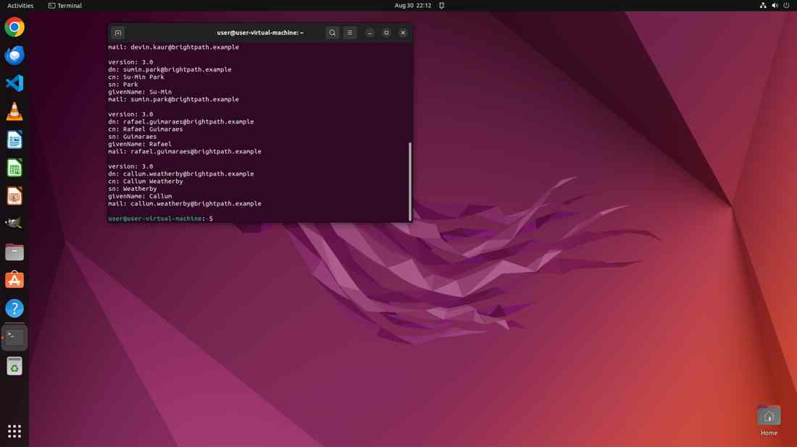
step 11 07:12:22
THINKINGThe LDIF looks correct. I can see the last three records (Su-Min Park, Rafael Guimaraes, Callum Weatherby) and the top shows devin.kaur's mail. The inactive ones (Hollis, Nadia) are excluded.
Now I need to open Thunderbird and import this LDIF into a new address book named "Tutor Panel". Let me launch Thunderbird. I'll use the terminal to launch it, or click the Thunderbird icon in the dock (second icon). Let me click the Thunderbird icon.
ACTIONThe LDIF file looks correct with all 5 active tutors and the inactive ones excluded. Now let me open Thunderbird.
EXECUTED (pyautogui in VM)pyautogui.click(32, 129)
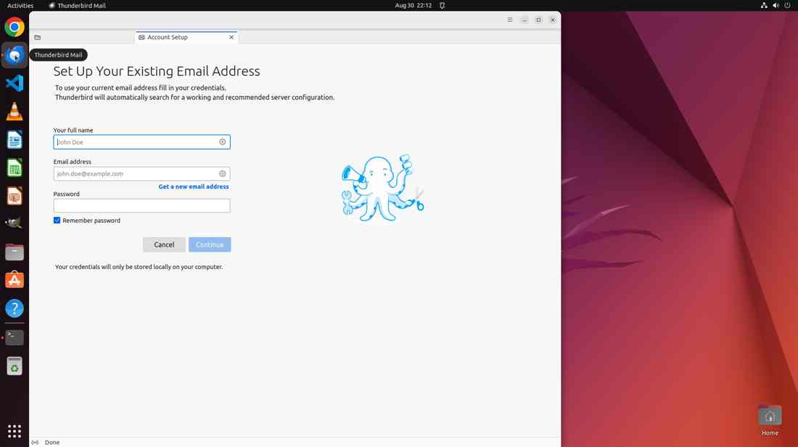
step 12 07:12:36
THINKINGThunderbird opened with Account Setup. I don't need an email account - I just need the address book. Let me Cancel this setup and get to the main window where I can access the Address Book. Clicking Cancel should close this tab. Then I need to access the Address Book.
Actually, in newer Thunderbird, the address book is a separate window. From the account setup I can click "Cancel" then use the menu (hamburger) to open "Address Book". Let me cancel.
ACTIONThunderbird is showing account setup, which I don't need. Let me cancel to reach the main window where I can open the Address Book.
EXECUTED (pyautogui in VM)pyautogui.click(390, 588)
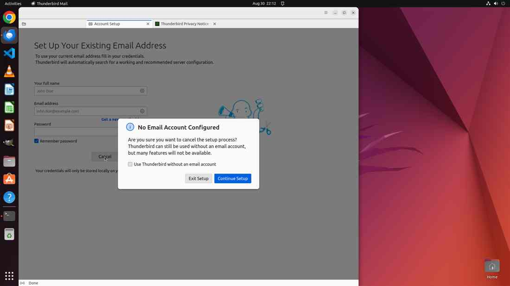
step 13 07:12:47
THINKINGA dialog appeared. I should check "Use Thunderbird without an email account" then "Exit Setup". Let me check the checkbox then click Exit Setup.
ACTIONI'll check "Use Thunderbird without an email account" and exit setup.
EXECUTED (pyautogui in VM)pyautogui.click(743, 671)
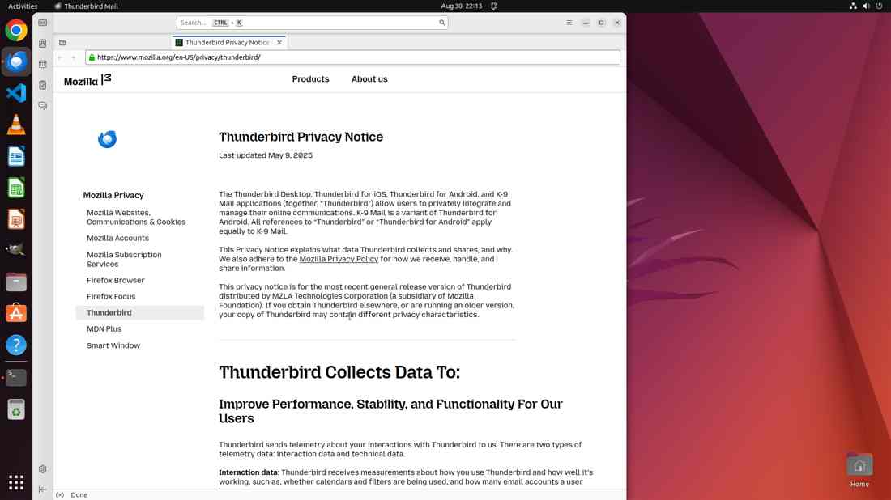
step 15 07:13:08
THINKINGNow I'm in the Thunderbird main window showing a privacy notice tab. There's a left sidebar with icons including a card/contacts icon (the address book). Let me open the Address Book. The left sidebar has icons: mail, calendar, tasks, chat. The address book is usually accessible via the hamburger menu or an icon. Let me use the hamburger menu (top right, three lines) and click "Address Book".
ACTIONNow I'm in the main Thunderbird window. Let me open the Address Book via the menu (hamburger icon top-right).
EXECUTED (pyautogui in VM)pyautogui.click(1224, 46)
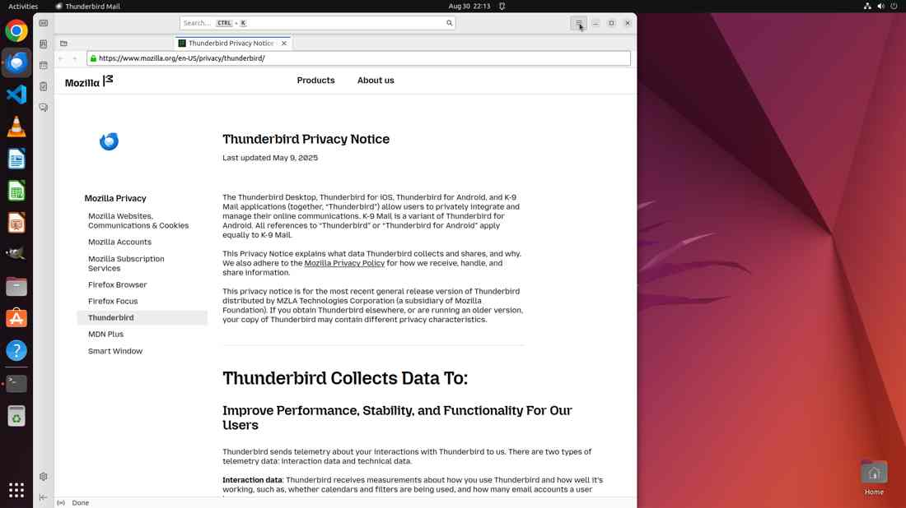
step 17 07:13:32
THINKINGThe menu isn't opening on my clicks - it might be that the click toggles it open then my screenshot is taken after it closes, or the menu opens below and I'm not capturing it. Let me try the keyboard shortcut. In Thunderbird, Ctrl+Shift+B opens the address book. Let me use that.
ACTIONLet me open the Address Book directly with the keyboard shortcut Ctrl+Shift+B.
EXECUTED (pyautogui in VM)pyautogui.hotkey("ctrl", "shift", "b")
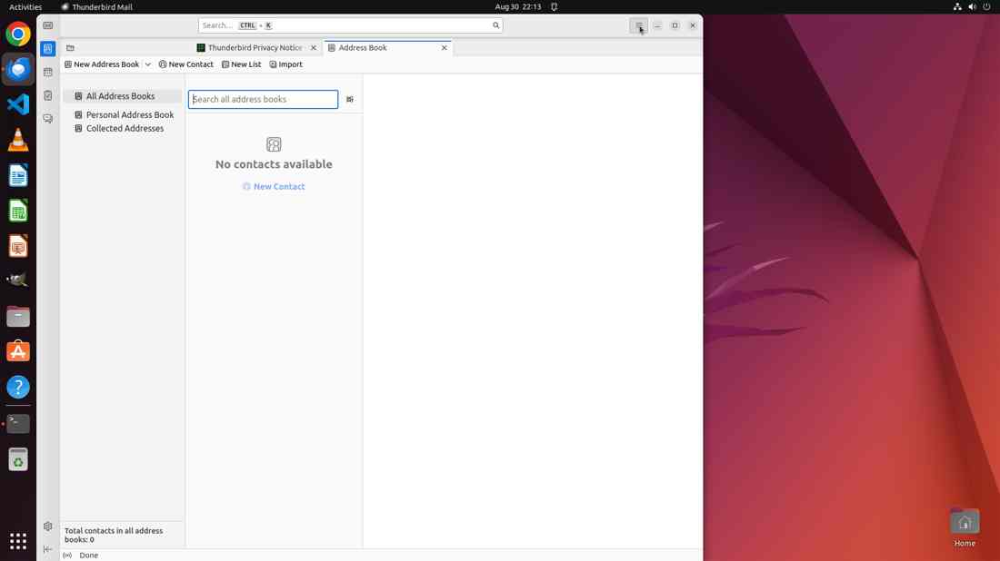
step 18 07:13:52
THINKINGThe Address Book is open. There's a toolbar with "New Address Book", "New Contact", "New List", "Import". I'll create the "Tutor Panel" address book first via "New Address Book", then import the LDIF into it. Actually, the Import function imports into a new address book and lets you name it. But importing an LDIF - Thunderbird's Import dialog handles mbox and LDIF for address books. Let me first create the address book "Tutor Panel" via New Address Book, then import the LDIF into it.
Actually the cleaner path: Use "New Address Book" to create "Tutor Panel", select it, then use Import to import the LDIF into that selected book. But Thunderbird's address book import (Import Address Book / LDIF) creates a NEW address book each time and names it based on the file. That's the tricky part - the imported book name may default to the file name.
Let me reconsider. The most reliable approach that gives exact control over the name "Tutor Panel" is:
1. Create a new address book named "Tutor Panel" via "New Address Book".
2. Then add the 5 contacts manually into it via "New Contact".
Manual entry of 5 contacts is very reliable and avoids import naming issues. Each contact: Full name (or first/last), email. That's only 5 contacts - quite manageable.
Let me create the address book first. Click "New Address Book".
ACTIONThe Address Book is open. I'll create a new address book named "Tutor Panel" first, then add the 5 active contacts into it. Let me click "New Address Book".
EXECUTED (pyautogui in VM)pyautogui.click(962, 683)
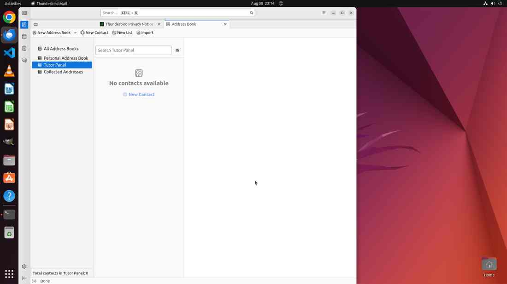
step 22 07:14:36
THINKINGThe "Tutor Panel" address book is created and selected (Total contacts: 0). Now I'll add the 5 active contacts via "New Contact". The new contact dialog has fields. Let me click "New Contact" to see the form layout.
I'll add them one at a time. The contacts:
1. Marta Oyelaran - marta.oyelaran@brightpath.example
2. Devin Kaur - devin.kaur@brightpath.example
3. Su-Min Park - sumin.park@brightpath.example
4. Rafael Guimaraes - rafael.guimaraes@brightpath.example
5. Callum Weatherby - callum.weatherby@brightpath.example
Let me click New Contact to open the form and inspect the fields.
ACTIONThe "Tutor Panel" address book is created and selected. Now let me add the first contact. I'll click "New Contact".
EXECUTED (pyautogui in VM)pyautogui.click(353, 122)
step 23 07:14:50
THINKINGThe New Contact form is open. Fields: First name, Last name, Display name, Email Addresses (with a text field). "Add to: Tutor Panel" is already selected.
The task says "first+last name and email". I'll fill First name, Last name, and Email. I could leave Display name blank - Thunderbird auto-generates it from first+last on save. But to be safe for evaluation, filling first and last name is what's requested. I'll fill first name, last name, and the email field.
The first name field is focused. Let me type "Marta", then click last name, type "Oyelaran", then click the email field and type the email. Then Save.
I'll batch: type Marta, click last name field, type Oyelaran, click email field, type email, click Save.
Email field is the one next to the "None" dropdown at y=395.
ACTIONThe New Contact form is open with "Add to: Tutor Panel" selected. Let me fill in the first contact: Marta Oyelaran.
EXECUTED (pyautogui in VM)pyautogui.click(872, 320)
step 24 07:15:06
THINKINGFirst name field focused. Let me batch typing first name, last name, and email for Marta, then Save. I'll use Tab to move from first name to last name (Tab likely moves to last name field). Actually Tab order may go first -> last -> display. To be safe I'll click each field. Let me type first, click last name, type last, click email, type email, then Save.
TOOL CALL<tool_call>
<function=computer_use>
<parameter=action>
type
</parameter>
<parameter=text>
Marta
</parameter>
</function>
</tool_call>
EXECUTED (pyautogui in VM)pyautogui.typewrite("Marta")
step 25 07:15:17
THINKING"Marta" entered, Display name auto-filled to "Marta". Now I'll fill Last name and Email. I'll click last name field, type Oyelaran, then click email field, type email, then Save. Batch these.
ACTIONNow let me fill the last name and email, then save this contact.
EXECUTED (pyautogui in VM)pyautogui.typewrite("marta.oyelaran@brightpath.example")
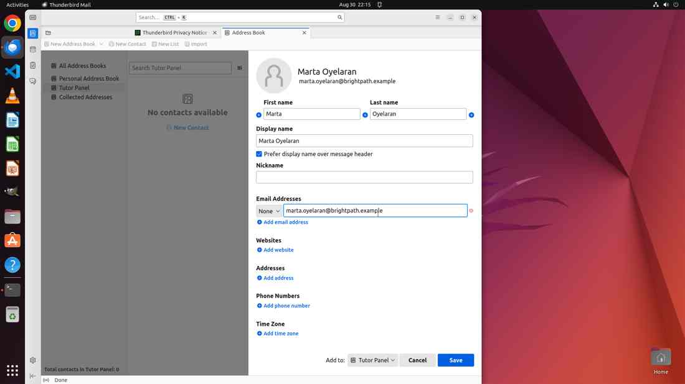
step 29 07:16:05
THINKINGAll fields correct for Marta. Email shows and header updated. Click Save. After saving, the form should close and return to the address book, or open a new empty contact form. Let me click Save and screenshot to see the state.
ACTIONEverything looks correct. Let me save this contact.
EXECUTED (pyautogui in VM)pyautogui.click(1276, 1010)
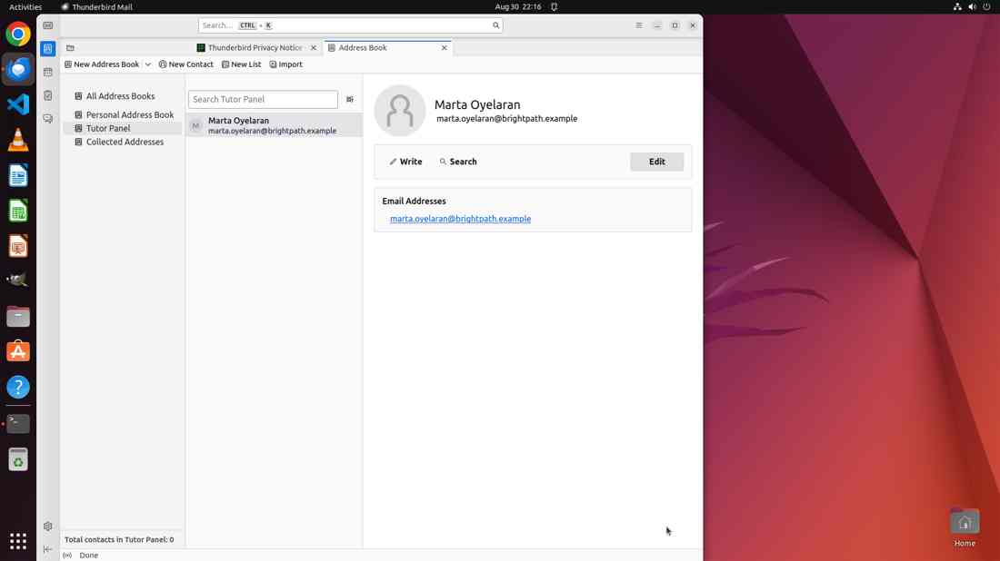
step 30 07:16:22
THINKINGMarta Oyelaran saved and appears in the list with email. The "Total contacts" still shows 0 but that may be stale; the contact is clearly listed. Now let me add the next contact. I'll click "New Contact" again and repeat for Devin Kaur.
I now know the field positions:
- First name: click (582, 214), type
- Last name: click (779, 214), type
- Email: click (700, 395), type
- Save: (851, 675)
Let me batch the whole flow for Devin Kaur: New Contact -> click first name -> type -> click last name -> type -> click email -> type -> Save. But the New Contact form opens with first name field already focused, so I can just type after clicking New Contact. To be safe I'll click first name field. Let me batch.
ACTIONMarta Oyelaran is saved. Now let me add the second contact, Devin Kaur, in one batch.
EXECUTED (pyautogui in VM)pyautogui.click(353, 122)
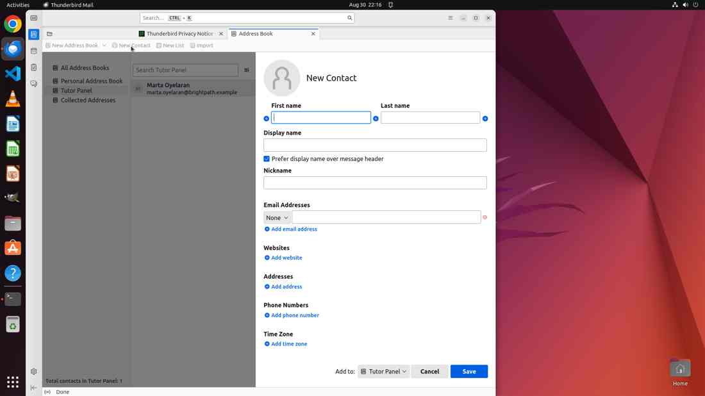
step 31 07:16:32
THINKINGNew Contact form open, "Total contacts in Tutor Panel: 1". First name field focused. Now I'll batch the full entry for Devin Kaur: type first name, click last name, type, click email, type, save.
ACTIONThe form is open with the first name field focused. Let me enter Devin Kaur's details in one batch.
EXECUTED (pyautogui in VM)pyautogui.typewrite("devin.kaur@brightpath.example")
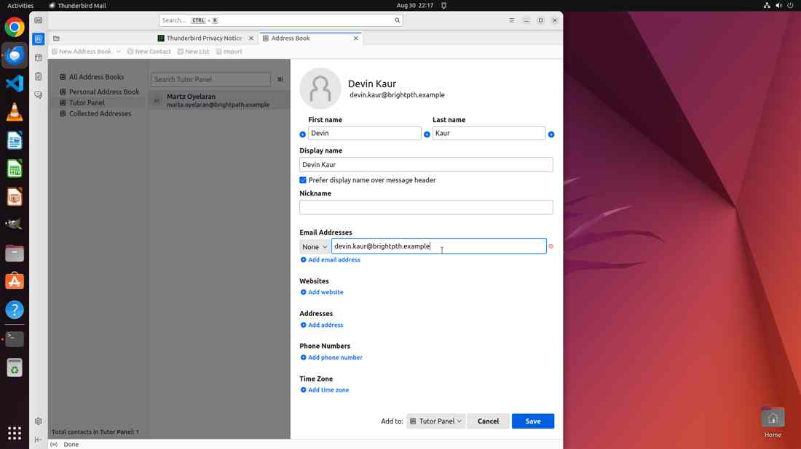
step 36 07:17:34
THINKINGAll correct. Save, then immediately open New Contact for the next one. I'll batch Save + click New Contact. After Save the form closes and New Contact reopens. Then first name field will be focused. Let me batch Save click, then New Contact click, then type "Su-Min".
ACTIONDevin Kaur is complete. Let me save and immediately start the next contact (Su-Min Park).
EXECUTED (pyautogui in VM)pyautogui.click(1276, 1010)
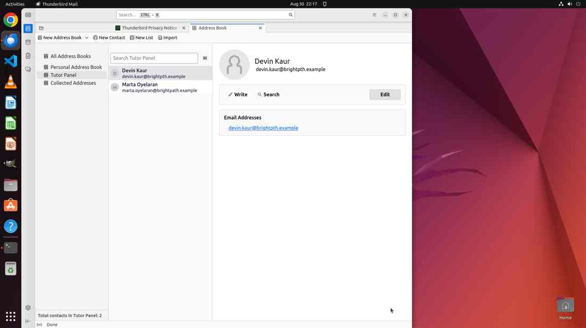
step 37 07:17:50
THINKINGNow 2 contacts: Devin Kaur and Marta Oyelaran. Now add Su-Min Park. Note "Su-Min" is a hyphenated first name - that's the given name as in CSV, so first name = "Su-Min", last = "Park". Let me open New Contact and enter.
ACTIONTwo contacts saved. Now the third: Su-Min Park.
EXECUTED (pyautogui in VM)pyautogui.click(353, 122)
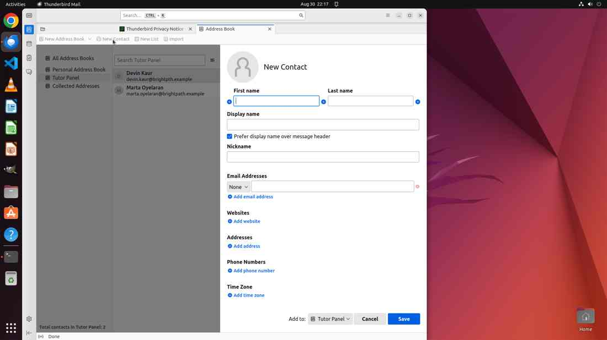
step 38 07:18:02
THINKINGForm open, first name focused. I'll batch: type "Su-Min", click last name (778,214), type "Park", click email (700,395), type "sumin.park@brightpath.example", click Save (851,675). These are predictable given consistent layout. Let me batch the whole sequence.
ACTIONI'll enter Su-Min Park's full details in one batch.
EXECUTED (pyautogui in VM)pyautogui.typewrite("Su-Min")
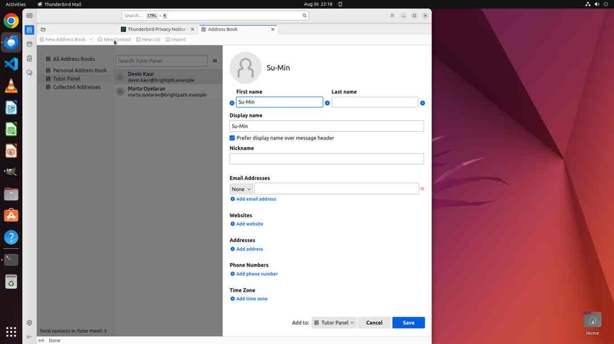
step 39 07:18:13
THINKINGThe layout is consistent and predictable. Now I'll batch the remaining fields for Su-Min Park: click last name, type Park, click email, type email, click Save.
ACTIONThe layout is consistent, so I'll batch the remaining fields for Su-Min Park.
EXECUTED (pyautogui in VM)pyautogui.click(1166, 320)
step 40 07:18:27
THINKINGLast name focused. Now I'm confident about the layout. Let me batch: type Park, click email, type email, click Save. This is a strong candidate for full batching.
TOOL CALL<tool_call>
<function=computer_use>
<parameter=action>
type
</parameter>
<parameter=text>
Park
</parameter>
</function>
</tool_call>
EXECUTED (pyautogui in VM)pyautogui.typewrite("Park")
step 41 07:18:42
THINKINGDisplay name "Su-Min Park" correct. Now batch email + Save. Click email field, type email, click Save.
EXECUTED (pyautogui in VM)pyautogui.typewrite("sumin.park@brightpath.example")
step 43 07:19:03
THINKINGAll correct for Su-Min Park. Now Save, then open New Contact for Rafael Guimaraes. I'll batch Save click + New Contact click + type "Rafael". After Save the form closes and New Contact opens with first name focused.
ACTIONSu-Min Park is complete. Let me save and start the next contact (Rafael Guimaraes).
EXECUTED (pyautogui in VM)pyautogui.click(1276, 1010)
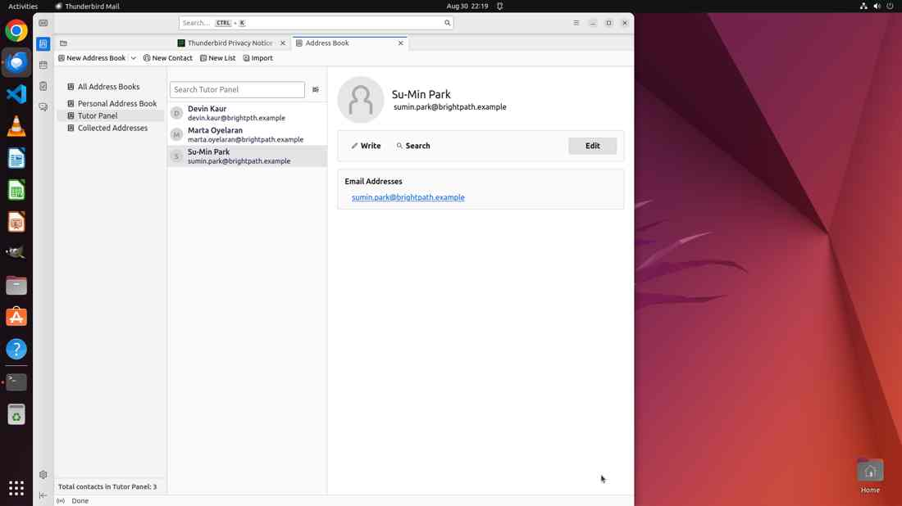
step 44 07:19:20
THINKING3 contacts now. Now Rafael Guimaraes. Let me open New Contact and enter. I'll batch: click New Contact, then type first name, click last name, type, click email, type, Save. But after clicking New Contact the form needs a moment to appear. I'll do New Contact click first, then a separate batch for the fields to be safe with timing. Actually the previous pattern worked. Let me batch New Contact click + type "Rafael" since the form opens with first name focused. But there's risk the form isn't ready. I'll do New Contact click alone first, then batch the rest.
Actually to save steps, I'll batch: click New Contact, wait 1s, type Rafael, click last name, type Guimaraes, click email, type email, click Save. This is predictable.
ACTIONThree contacts saved. Now the fourth: Rafael Guimaraes. I'll batch the full entry.
EXECUTED (pyautogui in VM)pyautogui.click(353, 122)
step 45 07:19:31
THINKINGForm open, first name focused. I'll batch the full entry for Rafael Guimaraes: type first, click last, type last, click email, type email, click Save.
TOOL CALL<tool_call>
<function=computer_use>
<parameter=action>
type
</parameter>
<parameter=text>
Rafael
</parameter>
</function>
</tool_call>
EXECUTED (pyautogui in VM)pyautogui.typewrite("Rafael")
step 46 07:19:45
THINKINGNow I'll batch the last name and email with confident coordinates: click last name, type Guimaraes, click email, type email, click Save.
EXECUTED (pyautogui in VM)pyautogui.typewrite("rafael.guimaraes@brightpath.example")
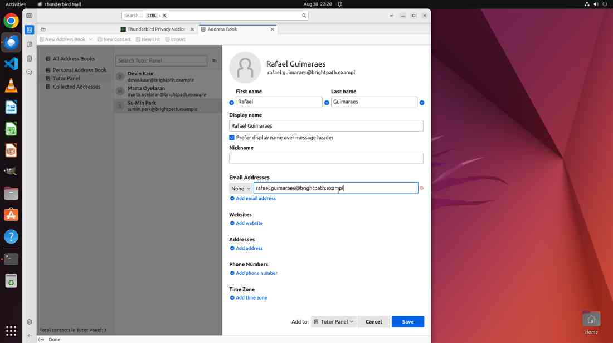
step 50 07:20:31
THINKINGEmail shows "rafael.guimaraes@brightpath.exempl" (truncated display, but full is entered). Now Save, then open New Contact for Callum Weatherby. I'll batch Save + New Contact click + type "Callum".
ACTIONNow let me save and start the final contact (Callum Weatherby).